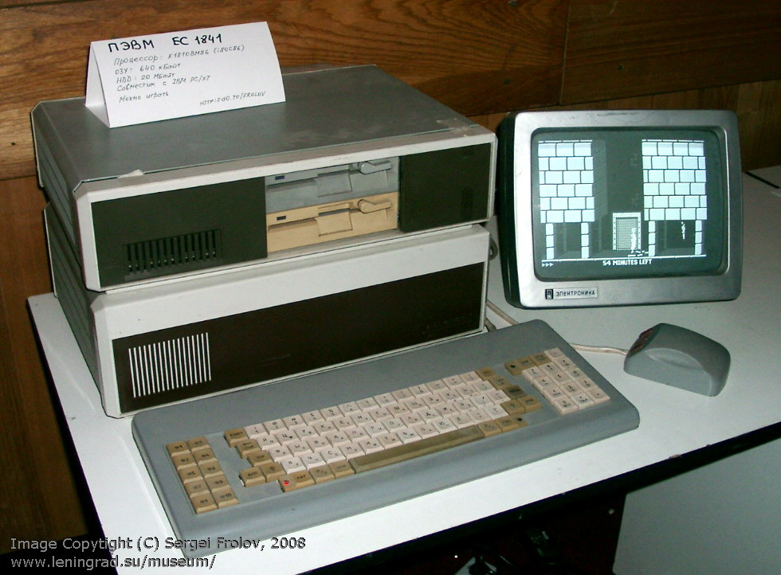
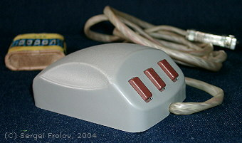
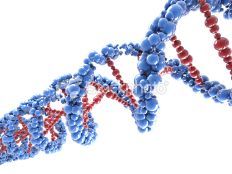

E.ĮGŪDŽIŲ SAVAITĖ 2012
Hewlett-Packard Lietuva, 2012-04-24
Moore's Law
1965 m. vienas iš būsimų Intel įkūrėjų Gordon E. Moore parašė straipsnį “ Kaip sukimšti daugiau komponentų į integrines schemas“
Esmė: tranzistorių skaičius duotame schemos plote dvigubėja kasmet ir tai vyks bent artimiausius 10 metų.
1975 m. Moore patikslina formuluotę: kas 2 metai. Jo kolega David House teigė - schemų greitaveika dvigubėja kas 18 mėnesių.
Po beveik 50 metų Moore’s Law vis dar lemia technologijų vystymąsi.
Nuo 1965 m. pagal šį dėsnį turėjo įvykti:
- 23 komponentų skaičiaus dvigubėjimo ciklai, viso 223 = 8 388 608 kartus
- ir 31 greitaveikos dvigubėjimo ciklas, t.y. 231 ~= 2 milijardai kartų
Tobulėjant technologijoms, kinta:
- komponentų tankis
- schemų greitaveika
- vienos schemos kaina
- energijos sunaudojimas
Mainframe (ESM) epocha
1972 m. rudenį SSSR ir Lietuva atsilikę nuo Vakarų technologijų apie 10 metų. Tuometinė technika atitiko maždaug 1962 m. geriausius pasaulio pasiekimus.
Minsk-22M
- 1965-1975
- Dažnis: 5 kHz (5000 op/s)
- Atmintis: 8192 žodžiai po 37 bitus (37 kilobaitai), 1.4 mm feritai (core memory)
- Patalpos plotas: 40 m2
- Energijos sunaudojimas: 4 kW
EC-1020 (IBM S/360-40 kopija)
- 1971
- Greitaveika: 20 000 op/s
- Atmintis: 64 kilobaitai
- Disko talpa: 7.25 megabaito
- Energijos sunaudojimas: 21 kW
- Patalpos plotas: 100 m2
- DOS/360
- Valstybinio masto piratavimas
- Atsilikimas nuo Vakarų: 10 metų
EC-1022
- 1975
- Greitaveika: 80 000 op/s
- Atmintis: 256 kilobaitai
- Disko talpa: 29 megabaito
- Energijos sunaudojimas: 25 kW
- Patalpos plotas: 108 m2
- OS/360
- Atsilikimas nuo Vakarų: 8 metai
EC-1035
- 1977
- Greitaveika: 160 000 op/s
- Atmintis: 512 kB
- Disko talpa: 100 megabaitų
- Energijos sunaudojimas: 40 kW
- Patalpos plotas: 110 m2
- OS/VS1, OS/VS2, VM/370, VM/SP
- Atsilikimas nuo Vakarų: 7 metai
HP 3000
- 1973
- Kaina $ 100 000
Personalinių kompiuterių atsiradimas
BK-0010
- 1985
- CPU: K1801BM1 (PDP-11)
- ROM: 8 kilobaitai
- Atmintis: 16 kB programoms, 16 kB ekranui
- Ekranas (TV): 32x24 ženklų (4 spalvos) arba 62x24x2 (J/B)
- FOCAL
BK-0011M
- 1990
- CPU: K1801BM1-3
- ROM: 32 kilobaitai
- Atmintis: 32 kB
- Ekranas (TV): 512x256 px (J/B) arba 256x256 (4 spalvos)
- ANDOS, FOCAL, Vilnius Basic
EC-1841
- 1987
- CPU: KP1810BM86 (Intel 8086 clone)
- Greitaveika: 4.77 MHz
- Atmintis: 640 kB
- HDD: 20 MB
- Ekranas: CGA
- MS DOS


IBM PC/AT
- 1984-1987
- CPU: Intel 80286
- Greitaveika: 6-8 MHz
- Atmintis: 512 kB
- HDD: 20 MB
- Ekranas: CGA
- PC DOS 3.0

Compaq Portable 386
- 1985
- CPU: Intel 80386-20
- Greitaveika: 20 MHz
- Atmintis: 512 kB
- HDD: 20 MB
- Ekranas: CGA
- PC DOS 3.0
AST PowerExec 4/33SL ColorPlus
- 1995
- CPU: Intel 486
- Greitaveika: 33 MHz
- Atmintis: 16 MB
- HDD: 200 MB
- Ekranas: VGA (640x480)
- MS Windows 3.1
Desktop
- 1999
- CPU: Intel Pentium III
- Greitaveika: 800 MHz
- Atmintis: 128 MB
- HDD: 8 GB
- Ekranas: 1024x768
- MS Windows NT
XXI amžius
HP OmniBook 6000
- 2000
- CPU: Intel Pentium III
- Litografija: 250 nm
- Greitaveika: 1000 MHz
- Atmintis: 128 MB
- HDD: 30 GB
- Ekranas: 1400x1050
- MS Windows 2000
Automobilis
- 2003
- 35 mikroprocesoriai
- optinis kabelis jungia galinės ir priekinės dalių elektronikos blokus
Compaq NW8000 Mobile Workstation
- 2003
- CPU: Intel Pentium M
- Litografija: 130 nm
- Greitaveika: 1.6 GHz
- Atmintis: 1 GB
- HDD: 60 GB
- Ekranas: 1600x1200
- MS Windows XP
Apple MacBook Pro 15"
- 2006
- CPU: Intel Core 2 Duo T7400
- Litografija: 65 nm
- Greitaveika: 2x2.16 GHz
- Atmintis: 2 GB
- HDD: 120 GB
- Ekranas: 1440x900
- Grafika: ATI Mobility Radeon X1600, 128MB
- MacOS X Lion
Compaq 8710w Mobile Workstation
- 2007
- CPU: Intel Core Duo T7700
- Litografija: 65 nm
- Greitaveika: 2x2.40 GHz
- Atmintis: 3 GB
- HDD: 120 GB
- Ekranas: 1920x1200
- Grafika: Quadro FX 1600M, 512MB, 32@625MHz
- MS Windows Vista
HP EliteBook 8560w Mobile Workstation
- 2011
- CPU: Intel i7 Sandy Bridge
- Litografija: 32 nm
- Greitaveika: 2x4x2.30 GHz
- Atmintis: 8 GB
- HDD: 500 GB
- Ekranas: 1920x1080
- Grafika: NVidia Quadro 2000M, 2GB, 192@550MHz
- MS Windows 7
Nokia N800 Internet Tablet
- 2008
- CPU: ARM TI OMAP 2420
- Litografija: 90 nm
- Greitaveika: 400 MHz CPU, 220 MHz DSP, 2D/3D graphics
- Atmintis: 128 MB
- SD: 4 GB
- Ekranas: 800x480, 4.13"
- Svoris: 206 g
- Maemo Linux
HTC Desire
- 2010
- CPU: ARMv7 Qualcomm QSD8250 Snapdragon
- Grafika: Adreno 200
- Litografija: 65 nm
- Greitaveika: 1 GHz Scorpion
- Atmintis: 576 MB
- SD: 16 GB
- Ekranas: 800x480, 3.7"
- Android 2.3 (Linux)
HP Touchpad
- 2011
- CPU: ARMv7 Qualcomm Snapdragon S3 APQ8060
- Grafika: Adreno 220
- Litografija: 45 nm
- Greitaveika: 2x1.5 GHz
- Atmintis: 1 GB
- Flash: 32 GB
- Ekranas: 1024x768
- webOS 3.0 (Linux)
Arduino
- 2009
- CPU: Atmel 8-bit AVR RISC
- Atmintis: 8 kB
- Dažnis: 16 MHz
- Flash: 256 kB
Automobilis
- 2011
- > 100 mikroprocesorių
- programinė įranga: 100 M kodo eilučių (naikintuve: 5 M eilučių)
Intel Tick-Tock
- 2006-01-05: Tick 65nm Presler, Cedar Mill, Yonah
- 2006-07-27: Tock 65nm Core
- 2007-11-11: Tick 45nm Penryn
- 2008-11-17: Tock 45nm Nehalem
- 2010-01-04: Tick 32nm Westmere
- 2011-01-09: Tock 32nm Sandy Bridge
- 2012-04-23: Tick 22nm Ivy Bridge
- 2013-04/06: Tock 22nm Haswell
- 2014: Tick 14nm Broadwell
- 2015: Tock 14nm Skylake
- 2016: Tick 10nm Skymont
- 2017: Tock 10nm
Biologija
DNR
- Ketvertainis kodas
- 4 skirtingi nukleotidai A-C-T-G
- 3 nukleotidų seka (kodonas) koduoja vieną iš 20 amino rūgščių (galimos 64 kombinacijos)
- vieno geno amino rūgščių seka aprašo atskirą baltymą, fermentą, enzimą
- nukleotido dydis: 0.33 nm
- spiralės storis: 2.5 nm 
Žmogaus genomas
- 23 000 genų
- moterys: 3194 M bazinių nukleotidų porų (22+XX)
- vyrai: 3098 M bazinių nukleotidų porų (22+XY)
- ilgiausia pirmoji chromosoma: 220 M nukleotidų porų
- žmogaus DNR ilgis: 2 m
- 800 MB kodas
- 949MB FASTA formate gzip suspausta informacija
- variacijas nuo bendro genomo galima suspausti iki 4 MB
- kiekvienas individas turi 1014 lastelių, kiekviena su pilna genomo kopija
- lastelių dydis:
- E-coli bakterija: 3x0.6 μm
- mitochondrija: 4x0.8 μm
- mielės: 3x4 μm
- raudonieji kraujo kūneliai: 8μm
- odos lastelė: 30 μm
- ameba: 500 μm
- odos lastelėje telpa 1 M elementų schema pagal Ivy Bridge technologiją (22nm x 1000 x 1000), po 6 metų: 10 M
- raudonajame kraujo kūnelyje telpa 100 000 elementų schema
Technological Singularity
- 2045
- Ray Kurzweil
- Vernor Vinge
- Kim Eric Drexler
Programinė įranga (Software)
Programavimo kalbos
- 1957: FORTRAN
- 1958: Algol
- 1959: COBOL
- 1964: BASIC
- 1964: PL/I
- 1970: Pascal
- 1972: C
- 1978: SQL
- 1980: C++
- 1983: Ada
- 1984: MATLAB
- 1986: Objective-C
- 1987: Perl
- 1991: Python
- 1991: HTML
- 1993: Ruby
- 1995: Java
- 1995: JavaScript
- 1995: PHP
- 1998: XML
- 2000: C#
- 2003: Scala
- 2009: Go
- 2011: Dart
- 2011: HTML5
Programavimo aplinkos
- 1997: Enterprise Java Beans (EJB)
- 2004: Ruby on Rails
- 2009: Node.js (JavaScript)
Operacinės sistemos
- 1969: UNIX
- 1981: PC-DOS, MS-DOS
- 1985: Windows
- 1986: HP-UX
- 1991: Linux
- 1991: Mac OS
- 1996: Palm OS
- 2007: iOS
- 2008: Android
Duomenų bazių valdymo sistemos
SQL
- Oracle
- MySQL
- PostgreSQL
- DB2
- SQL Server
NoSQL
- MongoDB
- CouchDB
- Redis
- Firebase
- Riak
- Amazon DynamoDB
- Hadoop
Atviras kodas
Cloud computing

Paslaugų teikimo modeliai
- SaaS (Software, Desktop, Database, Identity)
- PaaS = SaaS programų kūrimui (Platform)
- IaaS = HaaS (Infrastructure, Hardware, Storage, Network)
Pobūdis
- Kliento-serverio sistemos
- Grid (gardelė), pvz. FaH
- Mainframe
- Utility (mokama už panaudotus resursus)
- Peer-to-peer
Paslaugų tiekėjai
- HP Cloud - OpenStack
- Amazon AWS, EC2, S3, VPC
- Salesforce.com
- Google AppEngine
- Citrix XenServer
- VMware vSphere
- Rackspace
- GoGrid
- Cisco
- Joent
- Microsoft Azure
- Heroku
Lietuva - 1-me penketuke pasaulyje pagal interneto spartą
- Puikios sąlygos kurti Cloud computing paslaugas
- Reikia iniciatyvos, įžvalgumo, tendencijų suvokimo ir gerų ryšių su paslaugų tiekėjais bei investitoriais
Tendencijos
Social
- Google+
- Flickr
- Digg
- Hacker News
- ...
Atpažinimas
- Aurasma
- QR kodai
- Siri, Ivona
- SoundHound, Shazam
- Google Sky Map, Layar
- Goggles
- Wolfram Alpha
Robotika
- Lego Mindstorms
- ROTER Kursinis darbas
- Robotizuotos rankos kalibravimas
- Kiva Systems
- Boston Dynamics PETMAN for DARPA
- Robot News
- Self-driving car
- Mars rovers
- MSL - Curiosity 2012-08-05
Mokymas internetu
Priemonės programavimo mokymuisi
- GitHub
- Linux
- JavaScript
- HTML5
- Canvas, WebGL, Blender, Maya, Inka3D, ScetchFab.com
- Chrome, Firefox Developer tools
- Mozilla Developer Network
- HTML5 Rocks
- PhoneGap/Cordova
- OpenCV, MATLAB
- Atlassian BitBucket
- Heroku
- Nodester
Technologijų naujienos
- Hacker News
- Google+
- YouTube
- Robot News
- Technologijos.lt
- Tiksliųjų mokslų forumas